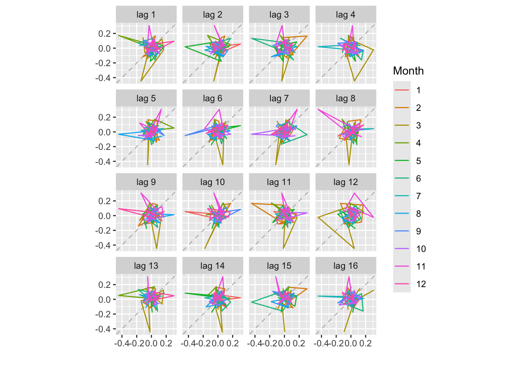

Tutorial 2: Visualizing Financial Time Series and Checking Normality
Author
Barry Quinn
Published
February 13, 2025
1 Introduction
This tutorial helps you develop data exploration skills for financial time series. You will learn to:
Use time-series objects in R to organize your data.
Create effective visual arguments: time plots, seasonal plots, and subseries plots.
Understand distribution properties: Compare your data to the normal distribution (histogram overlays, QQ-plots).
Use autocorrelation (ACF) to detect patterns like trend or seasonality.
Draw practical conclusions about normality assumptions in finance.
1.1 Financial Context
Financial time series (e.g., stock returns) are often assumed to be normally distributed for simplicity in risk/portfolio models.
Empirical evidence, however, shows fat-tailed distributions, volatility clustering, and other departures from normality.
Visualization is a first step in diagnosing these issues.
2 Data Setup
We’ll illustrate with a monthly log returns series for Glencore (“GLEN.L”). Feel free to swap in other tickers or use your class data from tsfe.
Code
# Using tidyquant to get monthly log returns from 2018glen <-tq_get("GLEN.L", from ="2018-01-01") %>%tq_transmute(select = adjusted,mutate_fun = monthlyReturn,type ="log",col_rename ="log_return")# Let's convert to a ts object (freq=12 for monthly)glen_ts <-ts(glen$log_return, frequency =12, start =c(2018,1))# Peek at the datahead(glen, 10)
Reading the ACF: - If the first lag is near zero, it implies little linear dependence between consecutive months. - Significant peaks at certain lags might indicate cyclical patterns or autocorrelation.
5.2 Lag Plot
Code
gglagplot(glen_ts)

Each small scatterplot checks log_returnt vs. log_return~(t - k)~
6 Exercises
Change the Ticker:
Choose a different stock (e.g. “AMZN”, “BARC.L” for Barclays, etc.) and replicate steps 3–5.
Discuss Normality:
Does the histogram or QQ-plot indicate fat tails?
Why might normality be a poor assumption for daily or monthly returns?
Autocorrelation:
Are you seeing any significant correlation at lag=1 or lag=2?
If so, what might that imply about “efficient market” assumptions?
Seasonality:
If you do see a monthly pattern, can you guess economic reasons behind it?
7 Conclusion
Key Takeaways:
Visual arguments are vital: time plots, QQ-plots, and ACF often reveal critical patterns that summary stats obscure.
Normality is often assumed in finance but rarely holds strictly.
Autocorrelation indicates potential predictability, though many equity returns appear close to random noise.
You’ve practiced the core of exploring a financial time series. The next step is to delve into more advanced modeling (ARIMA, GARCH, etc.) or smoothing techniques, which we’ll cover in Tutorial 3.